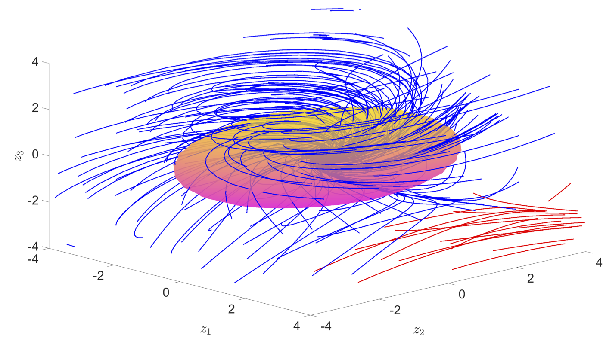

Stability and Reachability of Neural Feedback Loops
GitHub (Stability), GitHub (Reachability), Paper (Stability) Paper (Reachability)Motivation
- Non-linearities in neural networks make them effective but consequently make analysis difficult.
- Recent research has allowed neural networks to be designed as controllers in feedback systems, but only addresses linear systems.
- Stability, region of attraction and reachability are key robustness indicators, especially for safety-critical applications.
Diagram of a feedback system which is controlled by a neural network, this is known as a neural feedback loop.
Contribution
- Abstract the neural network’s non-linear equations as a convex constraint set.
- Use Sum of Squares programming framework to compute the stability and reachability of non-linear systems with neural network controllers directly.
- Exploit the sparsity of neural networks to reduce solve times using previous project on “Neural Network Verification by Exploiting Sparsity”.
Diagram of the convex outer-approximations of the reachable sets that are computed using this method.
Analysis
- Create more accurate tests using “Positivstellensatz” and higher order Lyapunov functions to better capture dynamics of system.
- Analyse systems in continuous time, where different methods rely on discretising system.
- Evaluate non-linear systems directly with parametric uncertainty.
Results
- Better stability guarantees are obtained as volume of the region of attraction is increased compared to other methods.
- Tighter reachable sets are computed over competitive methods.
Comparing the regions of attraction for different methods for a non-linear inverted pendulum. Showing that this approach “NNSOSStability” can obtain larger regions.
Approximate reachable set of a Duffing Oscillator computing using this method.
The region of attraction this method, the blue trajectories are stable, whereas the red ones are not.